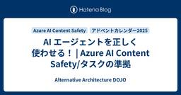
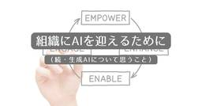
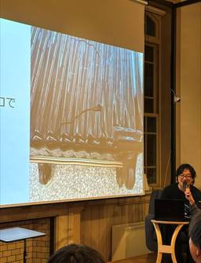
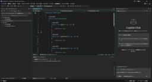
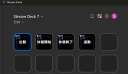
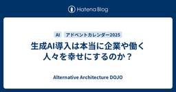

Alternative Architecture DOJO
https://aadojo.alterbooth.com/
オルターブースのクラウドネイティブ特化型ブログです。
フィード

AI エージェントを正しく使わせる！ | Azure AI Content Safety/タスクの準拠
Alternative Architecture DOJO
こんにちは！！ オルターブースの倉地です。 本記事は オルターブース Advent Calendar 2025 の13日目の記事です。 adventar.org AI エージェントをより安全に使うために 最近、AIの進化と共に、「AIエージェント」という言葉をよく聞くようになりました。AIエージェントは、単なるチャットボットとは違って、ユーザーの指示を理解し、必要なツールやサービスを呼び出してタスクを自動でこなしてくれる仕組みです。 ただ、便利な反面、呼び出しを間違えると大きな問題になることがあります。 例えば、ホテルの空き状況を確認したいだけなのに、予約までされてしまった、のような状況になる…
14時間前

組織にAIを迎えるために（続・生成AIについて思うこと）
Alternative Architecture DOJO
「生成AIについて思うこと」という記事を書いてから1年が経過し、いま「生成AIについて思うこと」を書いてみました。
2日前

GitHub Universe 2025 & Microsoft Ignite 2025 Recapイベントに登壇しました
Alternative Architecture DOJO
この記事はオルターブース2025年のアドベントカレンダーの11日目の記事です🎄 adventar.org こんにちは！オルターブースのエンジニアの横野です！ いきなりですが、2025年10月末～11月にサンフランシスコで開催された GitHub Universe 2025 と Microsoft Ignite 2025。 「行きたかったけど行けなかった」「情報が多すぎて追いきれない」という方も多いのではないでしょうか。 この記事では、現地参加したメンバーによる Recapイベント（振り返り会） の内容をもとに、 GitHub / Microsoft の最新トレンド 現地の雰囲気 「AIを作る」…
3日前

Visual Studio 2026では何が変わった？ 個人的必見機能をPickupして紹介！
Alternative Architecture DOJO
みなさんこんにちは！ エンジニアの星加です。 2025年のオルターブースアドベントカレンダー10日目の記事となります。 9日目は、古野さんによる STREAM DECKを使った打刻 でした！ adventar.org 2025年11月24日にVisual Studio 2026がリリースされ、もう少しで1か月ほどとなります。 今回は、Visual Studio 2026で追加された機能について、個人的に「これは良い！」と思ったご紹介します！ 本記事の対象者 本記事は以下の方を対象とします。 Visual Studio 2026の機能についてざっくりと知りたい方 Visual Studio 20…
4日前

STREAM DECKを使った打刻
Alternative Architecture DOJO
この記事はオルターブース2025年のアドベントカレンダーの9日目の記事です🎄 adventar.org こんにちは！オルターブースのレアキャラとなりつつあるエンジニアの古野です！ へいしゃでは業務を始めたり終えたりする際の打刻でfreeeを使用しています。 打刻する際にはfreeeへログインして打刻ボタンをぽちっと押す流れですが、これをSTREAM DECKのボタンぽちっでできるようにしました！ 今回はその手順を紹介したいと思います。ただ、一つ残念なことがあり...それは後程.... それではやってみましょう！ 手順 freee APIを使用できるようにする 打刻するAPI を作成する STR…
5日前

生成AI導入は本当に企業や働く人々を幸せにするのか？
Alternative Architecture DOJO
生成AIは導入して終わりではなく、組織のエンゲージメントを高め、働く人を幸せにするためのツールです。オルターブースが伴走型支援として取り組む、GitHub CopilotやM365 Copilot活用のリアルと、AI導入で企業が変わる視点を紹介します。
6日前

Visual Studio Code から PostgreSQL を簡単に操作する 7
7
Alternative Architecture DOJO
こんにちは！オルターブース清島です。 2025年のオルターブース アドベントカレンダー7日目の記事となります。 6日目はChaseさんによる Microsoft 認定資格取得の体験記でした。 adventar.org 11月には Microsoft Ignite の開催に合わせて Microsoft 製品の様々な発表がありましたが、この記事ではその中から「Visual Studio Code の PostgreSQL 拡張機能」について取り上げます。 Visual Studio Code PostgreSQL 拡張機能の概要 公式ドキュメント に詳しく記載されていますが、概要としては次のように…
7日前

6か月でMicrosoft認定資格を4つ取得した方法
Alternative Architecture DOJO
Chaseです！2025年のオルターブース アドベントカレンダーの6日の投稿です。 adventar.org 過去6ヶ月間で、技術系の資格を一つも持っていなかった状態から、最も人気のあるMicrosoft認定資格を4つ（うち1つはExpert資格）取得しました。簡単なことではありませんでしたが、どのように達成したか少しご紹介したいと思います。 For a little background I have a 4-year degree in computer science. I have worked as a software engineer for 4 years focusing o…
8日前

Hello,オルターブース！～非エンジニアがエンジニアの巣窟に入るまで～
Alternative Architecture DOJO
この記事はオルターブース2025年のアドベントカレンダーの5日目の記事です。4日目は高田くんによる「私がオルターブースに入社するまで」でした。 （こちらの記事に私も「担任」という名前で登場しております！） adventar.org 実は今年の4月に入社していたにも関わらず息をひそめておりました。 年貢の納め時ということで、重い腰を上げて入社エントリ公開します！ ※Techブログではないのでご容赦くださいませ。 入社前のわたし① 安易な就活が招いたソルジャーとしての日々 新卒で入社したのは地方銀行系証券会社でした。留学中に「もっと世の中の経済知らないとなー」というあまりにも安易な理由で証券会社を…
9日前
私がオルターブースに入社するまで
Alternative Architecture DOJO
この記事はオルターブース2025年のアドベントカレンダーの4日目の記事です🎄 adventar.org こんにちは、今年1月に中途入社しました高田です。 ブログ自体はいくつか書かせてもらっているのですが、ふと自己紹介的な記事を書いていないことに気づきました。この機会を逃すと一生書かない気がしたので、せっかくですので書いてみようと思います！ 簡単なプロフィール 下関市産まれ山口市育ち 個人的な趣味 : 競馬(記念馬券収集)、実家の犬を愛でること、ゲーム、お絵描き、アニメ鑑賞 専門学生時代 私は大阪の音楽の専門学校で作曲を学びました。 当時は植松伸夫さんや澤野弘之さんに物凄く影響を受けており、ゲー…
10日前
GitHub導入ご支援を続けて、よくいただくお悩みとソリューション紹介2025年版！
Alternative Architecture DOJO
こんにちは、オルターブース榛葉です！ もう12月ですが、日中はまだ20度を超える日がありますね。 毎年そうですが、こんな気温でしたっけ？忘れたなあ・・・と言ってる気がします。 さて、オルターブースは国内初の ✅️ Microsoft Advanced Specializationにおいて国内初のDevOps with GitHub on Azure受賞 (2025年から"Accelerate Developer Productivity with Microsoft Azure"に改名) そして、国内唯一の ✅️ GitHub社から全カテゴリののCertificationと公認講師制度を受賞 …
11日前
Managed Instance on Azure App Serviceの仮想マシンに接続する
Alternative Architecture DOJO
こんにちは、MLBお兄さんこと松村です。 この記事はオルターブース2025年のアドベントカレンダーの2日目の記事です。1日目は森田さんによる「来年のMicrosoft Ignite 2026に向けて」でした。 adventar.org 早いものでもう12月に突入しましたが、11月に開催された Microsoft Ignite 2025 のキャッチアップは続きます。 Managed Instance on Azure App Service Ignite でのアップデートの1つに Managed Instance on Azure App Service のパブリックプレビュー提供というものがあ…
12日前
来年のMicrosoft Ignite 2026に向けて
Alternative Architecture DOJO
2025年のオルターブース アドベントカレンダーの開幕です。 1日目はMicrosoft Ignite 2025に参加した経験を踏まえて、来年の参加する方・来年の自分へ？の備忘録をまとめました。 adventar.org Igniteとは？ Microsoft Igniteは、Microsoftが主催する年次のカンファレンスで最新の技術動向、製品アップデート、ベストプラクティス、パートナー向けセッションなどが提供されます。一緒に行った同僚の以下の記事も参考にどうぞ。 https://aadojo.alterbooth.com/entry/2025/11/18/205522 今年のIgnite2…
12日前
Agentforce World Tour Tokyo 2025 に初参加しました
Alternative Architecture DOJO
こんにちは！オルターブースの中島です。 12月にさしかかり慌ただしくなってきましたね。冬支度をしながら年末年始イベントを楽しみにしています🐧 11月は Microsoft も Salesforce もイベントがありますが、今回は Agentforce World Tour Tokyo 2025 に参加しました✨ 去年も行きたいと思っていたのですが、 Microsoft Ignite の参加があり見送りましたので今年が初参加になります。 Agentforce World Tour Tokyo Agentforce とは Salesforce の AIエージェントプラットフォームのことです。 昨年…
16日前
初めてのLT登壇でCloudflare Tunnelについて発表しました！
Alternative Architecture DOJO
みなさんこんにちは！ エンジニアの星加です。 先日、「たのしくでべろっぷめんと選手権」というイベントのLTで初登壇してきました！ 今回は、登壇した経緯と、感想のレポートをお届けしたいと思います。 まだ登壇したことが無い方、登壇してみたい方の参考になれば幸いです！ たのしくでべろっぷめんと選手権とは？ 20代の若手エンジニアを中心とし、エンジニア間のコミュニケーションを活性化することを目的とした、福岡の勉強会コミュニティです。 connpassでは次のように紹介されています。 本勉強会は、20代の若手エンジニアを中心に、登壇や聴講の敷居を下げ、エンジニア間のコミュニケーションを活性化することを目…
17日前
MS Ignite 2025 Day 4 - Japan Wrap-up Session - Ignite主要アナウンス総括
Alternative Architecture DOJO
Microsoft Ignite 2025最終日、Ignite史上初めて正式セッションとして組み込まれた日本語セッションが開催されました。Ignite主要アナウンス総括を共有いただきました。ネイティブ言語で聞けるってなんて素晴らしい・・・（しみじみ） 内容に間違いがあるかもしれません。正確な情報は下記の動画をもご参照ください。 Japan Wrap-up Session ignite.microsoft.com 主要発表まとめ Microsoft Foundry - AI開発基盤の進化 Azure AI Foundry → Microsoft Foundry: 名称変更し、Microsoft全…
19日前
【Microsoft Ignite 2025】Day4 レポート
Alternative Architecture DOJO
こんにちは！日を追うごとに脳内がルー大柴と化している横野です。人生 Mountain あり Valley あり。一寸先は Darkness 。バカも Holiday Holiday 言いなさい。 ということで最近の日課で毎日公園へ行っているのですが、今日は偶然清掃をしているところに遭遇しました。薬剤みたいなものを使ったり、大きな高圧洗浄機を使ったりでスピード感あふれる清掃でした。 【セッション】Evolving your IT career in the AI age このセッションでは、LLM や RAG の実装テクニックではなく、「AI 時代に IT キャリアをどう進化させるか」にフォーカ…
22日前
【Microsoft Ignite 2025】Day 4：AIは魔法じゃないと再確認したの巻
Alternative Architecture DOJO
Microsoft Igniteの最終日を迎えて思うことを書きました。
22日前
MS Ignite 2025 Day 3 - セキュリティとモダナイゼーションの実践
Alternative Architecture DOJO
MS Ignite 3日目は、AI時代のセキュリティ基盤構築と、アプリケーションモダナイゼーションに焦点を当てたセッションが中心でした。BreakoutセッションとPartner向けセッション、そして3つの実践的なハンズオンラボに参加。 BRK242: Top Essentials for an Integrated, AI-Ready Security Foundation BRK242 ゼロトラストの3原則をAIにも適用 明示的に検証: AIエージェントも認証必須(多くが省略している現状) 最小権限: 侵害時の影響範囲を最小化 侵害を前提: 継続的な監視が必要 MFAの現状 業務アカウント…
22日前
【Microsoft Ignite 2025】Day 3：パートナーが大集合！の巻
Alternative Architecture DOJO
Microsoft Ignite 2025、3日目の様子を書きました。
22日前
【Microsoft Ignite 2025】Day3 レポート
Alternative Architecture DOJO
こんにちは！昨日はステーキを食べたせいかお腹が痛くなり25年ぶりくらいに飲んだ正露丸の効果にびっくりしている横野です。美味しい肉は大体お腹を壊します。笑 あとは3日目にしてやっとホテルの部屋から見える景色にヤツがいることに気づきました。 【セッション】From DEV to PROD: How to build agentic memory with Azure Cosmos DB (BRK) このセッションでは、エージェントの「メモリ」を Azure Cosmos DB 上に実装・運用するための考え方と実装パターンが整理されていました。 短期／長期メモリの役割や、マルチテナント構成、ベクトル…
22日前
MS Ignite 2025 Day 2 - エージェント、ガバナンス、そしてAzure運用
Alternative Architecture DOJO
MS Ignite 2日目は、AIエージェントのガバナンスと運用管理をセッションを聞いてきました。 MOSCONE SOUTHからの風景 MOSCONE SOUTHの会場からの眺め。左がMOSCONE WEST会場、右がマリオットマーキス会場です。 Agent 365: エンタープライズ向けエージェント管理 BRK305セッション会場 BRK305セッションでは、Agent 365の3つの柱が紹介されました: 1. アイデンティティ管理 エージェントブループリントを使ってEntraで一意のアイデンティティを付与。Claude Agent SDKなど、Microsoft以外のプラットフォームで構…
23日前
【Microsoft Ignite 2025】Day2 レポート
Alternative Architecture DOJO
おはようございます！早朝に目が覚めてしまい散歩をしていたらサンフランシスコでは朝4時でもバスが走っていることにビックリした横野です。 今日も特別見たいセッション以外はなるべくサンフランシスコ現地でしか見れないセッションを中心に参加してきました。 【セッション】Identity modernization builds the foundation for AI 「Active Directory から Entra ID へのアイデンティティ・モダナイゼーション」が AI 時代の土台であることが強調されました。 オンプレ AD はスキル不足・運用負荷・攻撃対象の大きさゆえに重大インシデントの温床…
23日前
【Microsoft Ignite 2025】Day 2：Microsoft 365 Copilot低価格版が発表されたぞ！の巻
Alternative Architecture DOJO
Microsoft Igniteで発表されたMicrosoft 365 Copilotの低価格版について書きました。
24日前
MS Ignite 2025 Day 1 - チェイスセンターでのキーノートと現地体験
Alternative Architecture DOJO
いよいよMS Ignite 2025の本番、Day 1が始まりました！Day 0で事前チェックインを済ませ、チェイスセンターでのキーノートから、会場間の移動、そしてセッション体験まで、現地ならではの体験をレポートします。 チェイスセンターへ 朝6時半ごろキーノートが開催されるチェイスセンターに到着しました。キーノートの開始は9時からですが何名かの参加者がすでに到着しており、熱気を感じます。 チェイスセンターの外観 会場に入る前には、セキュリティチェックがあります。セキュリティゲートと手荷物検査を通過し、無事に会場内へ。 キーノート チェイスセンター内のキーノート会場 会場の臨場感は、オンライン…
24日前
【Microsoft Ignite 2025】Day 1：Opening Keynoteの巻
Alternative Architecture DOJO
いよいよ開幕したMicrosoft IgniteのOpening Keynoteについて書きました。
24日前
【Microsoft Ignite 2025】Day1 レポート
Alternative Architecture DOJO
入場 こんにちは！今日はいよいよ Microsoft Ignite 2025 Day1！Day1の朝は早いということで目覚ましを午前5:00にセットしたのですが、なぜか目覚ましが鳴る直前に起きてしまい少し眠たい横野です。 当日は午前6:30に Uber を予約していざ Chase Center へ！頑張って早く到着したつもりでしたが、既に並んでいる方たちもいて参加者の熱量の高さを感じました。 オープンの午前7:30までなかなか時間が経たず、寒くてがたがた震えながら待っていました。ホッカイロでも持参して隣の知らない人に配れたら仲良くなれたかな。笑 中に入るとテンション高いスタッフの方がコーヒーや…
24日前
【Microsoft Ignite 2025】Microsoft Igniteってどんなイベント？
Alternative Architecture DOJO
Microsoft Igniteとはどういうイベントなのかを簡潔に説明しています。
25日前
MS Ignite 2025 Day 0 - サンフランシスコでの事前チェックイン体験
Alternative Architecture DOJO
MS Ignite 2025に参加するため、サンフランシスコにやってきました！本格的なイベントが始まるDay 1の前日、Day 0は事前レジストレーションの日。会場周辺を散策しながら、チェックインを済ませてきたので、その様子をレポートします。 サンフランシスコ到着 サンフランシスコの街は、すでにホリデーシーズンの雰囲気に包まれていました。ユニオンスクエアには立派なクリスマスツリーが飾られいました。 ユニオンスクエアのクリスマスツリー ユニオンスクエアの前には、ニンテンドーストアあったのでもちろん立ち寄ってみました。限定グッズもありましたよ。 ニンテンドーストア Waymo自動運転タクシー体験 …
1ヶ月前
【Microsoft Ignite 2025】Day 0：バッジとswagで開幕の巻
Alternative Architecture DOJO
おはようサンフランシスコ～！！（声：ダニー・タナー） みなさん、おはようございます。木本です。 明日から始まるMicrosoft Igniteに参加するため、現在アメリカのサンフランシスコに来ています。 個人的には初の渡米であり、しかも50回目の誕生日をサンフランシスコで迎えることができ、この記念すべき日に「集合時間に起床する」の実績を解除してしまいました。（関係各位、ごめんなさい） さて、そんな楽しいサンフランシスコ（曇天ときどき雨）ですが、先ほどMicrosoft Ignite会場であるMoscone Westで受付を済ませてきました。 バッジ受け取り会場のMoscone West Mic…
1ヶ月前